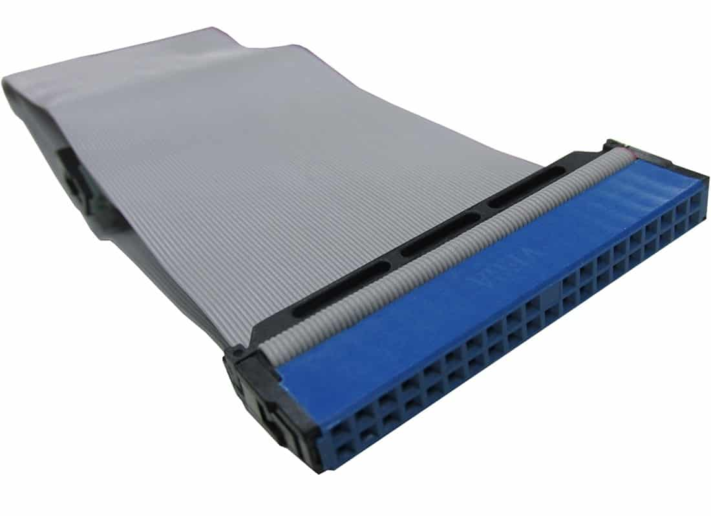
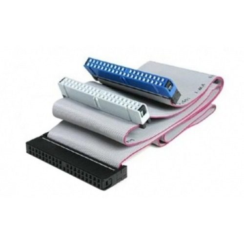
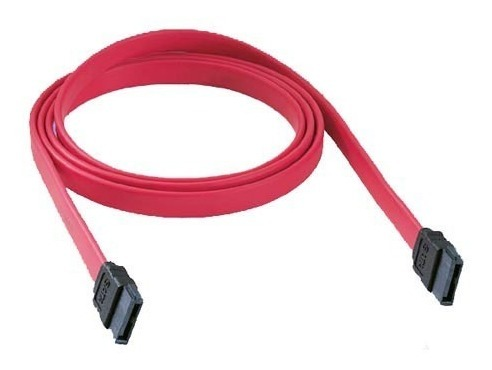

Buses de datos
Bus es una palabra inglesa que significa “transporte”. se relaciona con la idea de las transferencias internas de datos que se dan en un sistema computacional en funcionamiento, que transfiere datos entre componentes de la computadora.
⠀
Existen dos grandes tipos clasificados por el método de envío de la infor paralelo o serial.⠀
BUS PARALELO: Es un bus en el cual los datos son enviados por bytes al mismo tiempo, con la ayuda de varias líneas que tienen funciones fijas. La cantidad de datos enviada es bastante grande con una frecuencia moderada y es igual al ancho de los datos por la frecuencia de función computadores ha sido usado de manera intensiva, desde el bus del procesador, los buses de discos duros, tarjetas de expansión y de vídeo, hasta las impresoras.⠀
⠀
BUS SERIE: En este los datos son enviados, bit a bit y se reconstruyen por medio de registros o rutinas de software. Está formado por pocos conductores y su ancho de banda depende de la frecuencia. Es usado desde hace menos de 10 años en buses para discos duros, tarjetas de expansión y para el bus del procesador.⠀
⠀
COMPONENTES:⠀
*Cables de cobre o fibra óptica⠀
*Pistas en un circuito impreso⠀
*Resistencia⠀
*Capacitores⠀
*Circuitos⠀
Arquitectura: Se basa en 3 buses combinados en un bus de sistema unificado para conectar a todos los componentes que conforman el equipo de computo.⠀
Bus de datos: Transmite la información o instrucciones desde el solicitante hasta el destino, es un bus bidireccional.⠀
Bus de direcciones: Establece la dirección de memoria con la que se va a trabajar, ya sea para lectura o escritura, este es un bus unidireccional.⠀
Bus de control: Especifica la acción a realizar con los datos en la posición de memoria señalada, es bidireccional.⠀